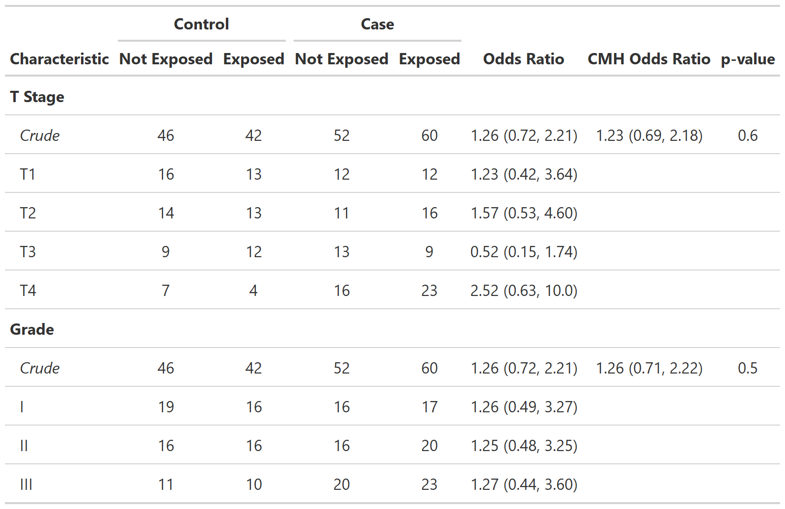
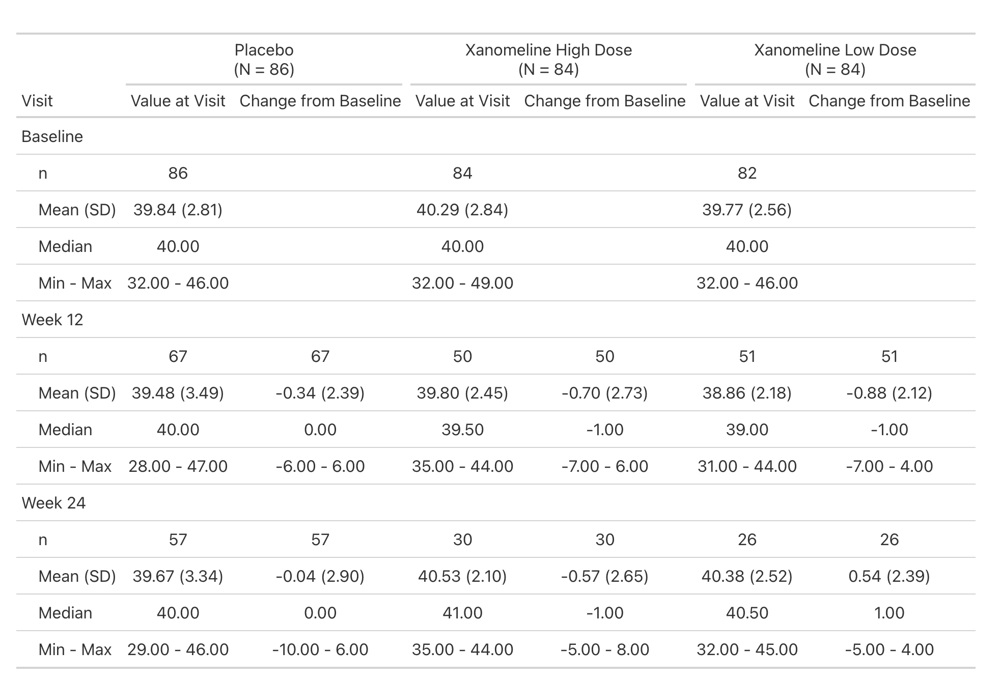
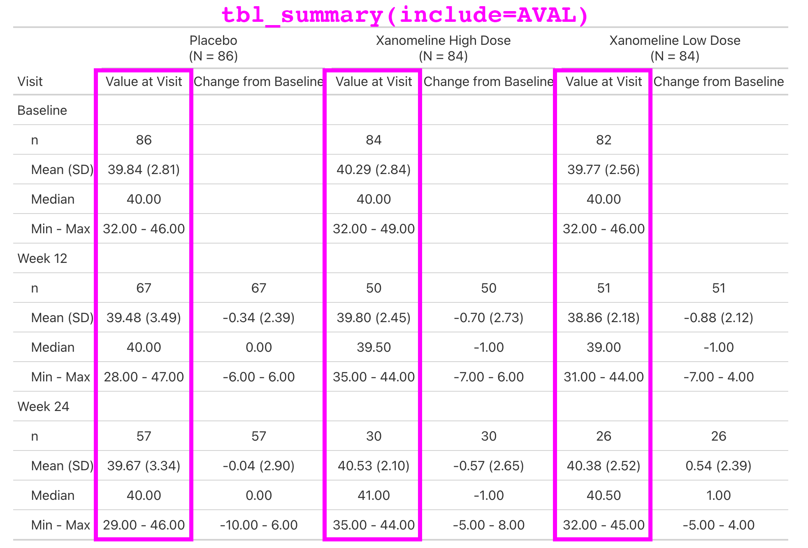
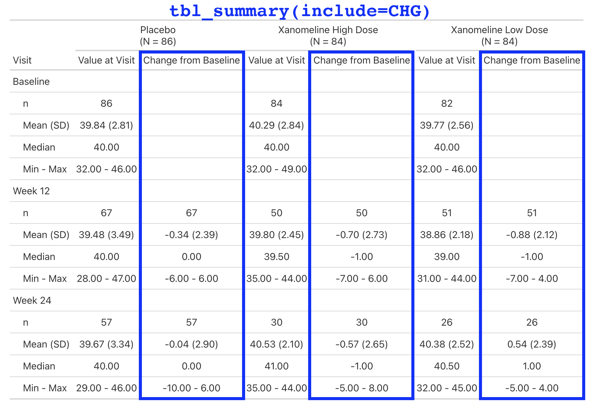
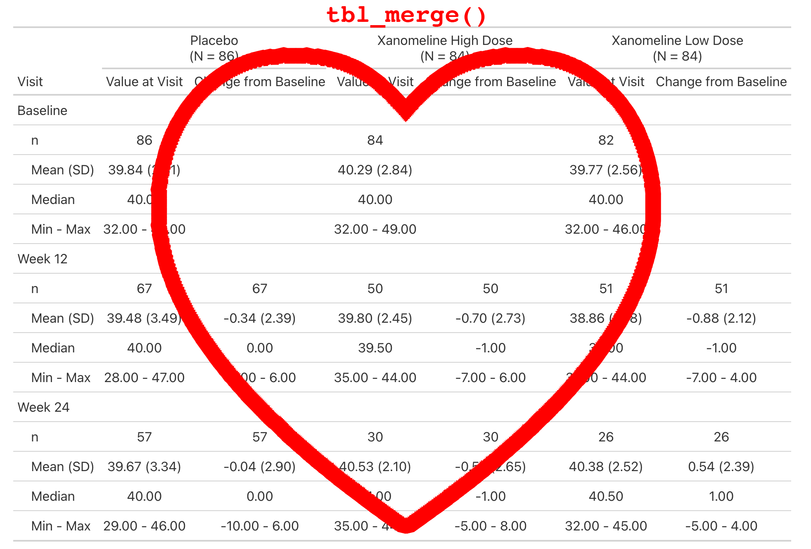
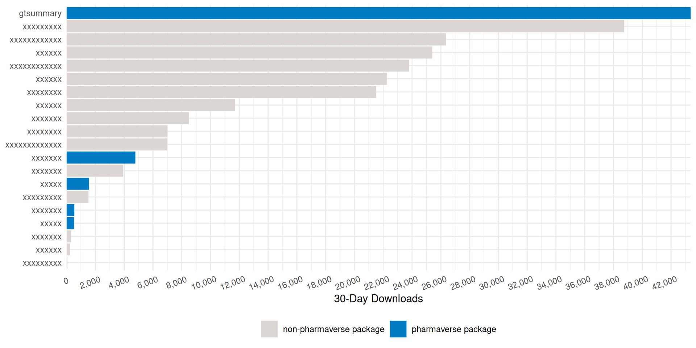

library(tidyverse)
adsl <- pharmaverseadam::adsl |>
filter(SAFFL == "Y") |>
mutate(ARM2 = word(ARM), FEMALE = SEX == "F") |>
labelled::set_variable_labels(FEMALE = "Female")
adae <- pharmaverseadam::adae |>
filter(
USUBJID %in% adsl$USUBJID,
AESOC %in% c("CARDIAC DISORDERS", "EYE DISORDERS"),
AEDECOD %in% c("ATRIAL FLUTTER", "MYOCARDIAL INFARCTION", "EYE ALLERGY", "EYE SWELLING")
) |>
mutate(ARM2 = word(ARM))
adlb <- pharmaverseadam::adlb |>
filter(
USUBJID %in% adsl$USUBJID,
PARAM %in% c("Albumin (g/L)", "Bilirubin (umol/L)" , "Leukocytes (10^9/L)"),
AVISIT %in% c("Baseline", "Week 12", "Week 24")
) |>
mutate(ARM2 = word(ARM))
# Construct an oncology outcomes dataset
ad_onco <-
list(
# Best Overall Response
pharmaverseadam::adrs_onco |>
filter(PARAMCD == "CBOR") |>
select(USUBJID, RECIST_CBOR = AVALC) |>
labelled::set_variable_labels(RECIST_CBOR = "Best Overall Response"),
# Tumor Size
pharmaverseadam::adtr_onco |>
filter(PARAM == "Target Lesions Sum of Diameters by Investigator") |>
select(USUBJID, TUMOR_SIZE = AVAL) |>
labelled::set_variable_labels(TUMOR_SIZE = "Tumor Size, mm"),
# Progression-free Survival
pharmaverseadam::adtte_onco |>
filter(PARAMCD == "PFS") |>
select(USUBJID, PFS_CNSR = CNSR, PFS_TIME = AVAL) |>
mutate(PFS_EVENT = abs(PFS_CNSR - 1)) |>
labelled::set_variable_labels(
PFS_CNSR = "PFS, Censor",
PFS_EVENT = "Progression",
PFS_TIME = "PFS Followup Time, days"
)
) |>
reduce(full_join, by = "USUBJID") |>
inner_join(adsl[c("USUBJID", "AGE", "ETHNIC", "ARM")], by = "USUBJID") |>
mutate(ARM2 = word(ARM))Clinical Reporting with {gtsummary}
Daniel D. Sjoberg
Introduction
Questions
Please ask questions at any time!

How it started
Began to address reproducible issues while working in academia
Goal was to build a package to summarize study results with code that was both simple and customizable
First release in May 2019
How it’s going
The stats
- 1,700,000 installations from CRAN
- 1,200 GitHub stars
- 1,000 citations in peer-reviewed articles
- 350 contributors
- 50 code contributors
Won the 2021 American Statistical Association (ASA) Innovation in Programming Award
Won the 2024 Posit Pharma Table Contest


{gtsummary} overview
- Create tabular summaries with sensible defaults but highly customizable
- Types of summaries:
- Demographic- or “Table 1”-types
- Cross-tabulation
- Regression models
- Survival data
- Survey data
- Custom tables
- Report statistics from {gtsummary} tables inline in R Markdown
- Stack and/or merge any table type
- Use themes to standardize across tables
- Choose from different print engines
{gtsummary} overview
For our workshop, we will focus on the following summary types as well as themes and print engines.
tbl_summary()tbl_hierarchical()
Other functions helpful functions we’re not covering:
tbl_hierarchical_count(): similar totbl_hierarchical()for counts instead of ratestbl_cross(): cross tabulationstbl_continuous(): summarizing continuous variables by 2 categorical variablestbl_wide_summary(): similar totbl_summary()but statistics are presented in separate columnsmany more!
tbl_summary()
{pharmaverseadam} Data for Examples
Reduced sizes of adsl, adse, adlb. Created ad_onco with oncologic outcomes.
Basic tbl_summary()
Four types of summaries:
continuous,continuous2,categorical, anddichotomousStatistics are
median (IQR)for continuous,n (%)for categorical/dichotomousVariables coded
0/1,TRUE/FALSE,Yes/Notreated as dichotomous by defaultLabel attributes are printed automatically
Customize tbl_summary() output
| Characteristic | Placebo N = 861 |
Xanomeline N = 1681 |
|---|---|---|
| Age | 76 (69, 82) | 77 (71, 81) |
| Ethnicity | ||
| HISPANIC OR LATINO | 3 (3.5%) | 9 (5.4%) |
| NOT HISPANIC OR LATINO | 83 (97%) | 159 (95%) |
| Female | 53 (62%) | 90 (54%) |
| 1 Median (Q1, Q3); n (%) | ||
by: specify a column variable for cross-tabulation
Customize tbl_summary() output
| Characteristic | Placebo N = 861 |
Xanomeline N = 1681 |
|---|---|---|
| Age | ||
| Median (Q1, Q3) | 76 (69, 82) | 77 (71, 81) |
| Ethnicity | ||
| HISPANIC OR LATINO | 3 (3.5%) | 9 (5.4%) |
| NOT HISPANIC OR LATINO | 83 (97%) | 159 (95%) |
| Female | 53 (62%) | 90 (54%) |
| 1 n (%) | ||
by: specify a column variable for cross-tabulationtype: specify the summary type
Customize tbl_summary() output
| Characteristic | Placebo N = 861 |
Xanomeline N = 1681 |
|---|---|---|
| Age | ||
| Mean (SD) | 75 (9) | 75 (8) |
| Min, Max | 52, 89 | 51, 88 |
| Ethnicity | ||
| HISPANIC OR LATINO | 3 (3.5%) | 9 (5.4%) |
| NOT HISPANIC OR LATINO | 83 (97%) | 159 (95%) |
| Female | 53 / 86 (62%) | 90 / 168 (54%) |
| 1 n (%); n / N (%) | ||
by: specify a column variable for cross-tabulationtype: specify the summary typestatistic: customize the reported statistics
Customize tbl_summary() output
| Characteristic | Placebo N = 861 |
Xanomeline N = 1681 |
|---|---|---|
| Age, years | ||
| Mean (SD) | 75 (9) | 75 (8) |
| Min, Max | 52, 89 | 51, 88 |
| Ethnicity | ||
| HISPANIC OR LATINO | 3 (3.5%) | 9 (5.4%) |
| NOT HISPANIC OR LATINO | 83 (97%) | 159 (95%) |
| Female | 53 / 86 (62%) | 90 / 168 (54%) |
| 1 n (%); n / N (%) | ||
by: specify a column variable for cross-tabulationtype: specify the summary typestatistic: customize the reported statistics
label: change or customize variable labels
Customize tbl_summary() output
| Characteristic | Placebo N = 861 |
Xanomeline N = 1681 |
|---|---|---|
| Age, years | ||
| Mean (SD) | 75 (8.6) | 75 (8.1) |
| Min, Max | 52, 89 | 51, 88 |
| Ethnicity | ||
| HISPANIC OR LATINO | 3 (3.5%) | 9 (5.4%) |
| NOT HISPANIC OR LATINO | 83 (97%) | 159 (95%) |
| Female | 53 / 86 (62%) | 90 / 168 (54%) |
| 1 n (%); n / N (%) | ||
by: specify a column variable for cross-tabulationtype: specify the summary typestatistic: customize the reported statistics
label: change or customize variable labelsdigits: specify the number of decimal places for rounding
{gtsummary} + formulas
This syntax is also used in {cards}, {cardx}, {crane}, and {gt}.

Named list are OK too! label = list(age = "Patient Age")
{gtsummary} selectors
Use the following helpers to select groups of variables:
all_continuous(),all_categorical()Use
all_stat_cols()to select the summary statistic columns
Add-on functions in {gtsummary}
tbl_summary() objects can also be updated using related functions.
add_*()add additional column of statistics or information, e.g. p-values, q-values, overall statistics, treatment differences, N obs., and moremodify_*()modify table headers, spanning headers, footnotes, and more
Update tbl_summary() with add_*()
| Characteristic | Placebo N = 861 |
Xanomeline N = 1681 |
Overall N = 2541 |
|---|---|---|---|
| Age | 76 (69, 82) | 77 (71, 81) | 77 (70, 81) |
| Ethnicity | |||
| HISPANIC OR LATINO | 3 (3.5%) | 9 (5.4%) | 12 (4.7%) |
| NOT HISPANIC OR LATINO | 83 (97%) | 159 (95%) | 242 (95%) |
| Female | 53 (62%) | 90 (54%) | 143 (56%) |
| 1 Median (Q1, Q3); n (%) | |||
add_overall(): adds a column of overall statistics
Update tbl_summary() with add_*()
| Characteristic | N | Placebo N = 961 |
Xanomeline N = 1771 |
p-value2 |
|---|---|---|---|---|
| Tumor Size, mm | 25 | 78 (38, 96) | 67 (26, 92) | 0.66 |
| Progression | 273 | 6 (6.3%) | 9 (5.1%) | 0.69 |
| 1 Median (Q1, Q3); n (%) | ||||
| 2 Wilcoxon rank sum test; Pearson’s Chi-squared test | ||||
add_n(): adds a column non-missing countsadd_p(): adds a column of p-values
Update tbl_summary() with modify_*()
tbl <-
adsl |>
tbl_summary(by = ARM2, include = c("AGE", "ETHNIC", "FEMALE")) |>
modify_header(
stat_1 ~ "**Group A**",
stat_2 ~ "**Group B**"
) |>
modify_spanning_header(
all_stat_cols() ~ "**Drug**") |>
modify_footnote(
all_stat_cols() ~
paste("median (IQR) for continuous;",
"n (%) for categorical")
)
tbl| Characteristic |
Drug
|
|
|---|---|---|
| Group A1 | Group B1 | |
| Age | 76 (69, 82) | 77 (71, 81) |
| Ethnicity | ||
| HISPANIC OR LATINO | 3 (3.5%) | 9 (5.4%) |
| NOT HISPANIC OR LATINO | 83 (97%) | 159 (95%) |
| Female | 53 (62%) | 90 (54%) |
| 1 median (IQR) for continuous; n (%) for categorical | ||
- Use
show_header_names()to see the internal header names available for use inmodify_header()
Column names
Column Name Header level* N* n* p*
label "**Characteristic**" 254 <int>
stat_1 "**Group A**" Placebo <chr> 254 <int> 86 <int> 0.339 <dbl>
stat_2 "**Group B**" Xanomeline <chr> 254 <int> 168 <int> 0.661 <dbl> * These values may be dynamically placed into headers (and other locations).
ℹ Review the `modify_header()` (`?gtsummary::modify_header()`) help for examples.all_stat_cols() selects columns "stat_1" and "stat_2"
Update tbl_summary() with add_*()
| Characteristic | Placebo N = 961 |
Xanomeline N = 1771 |
Difference2 | 95% CI2 | p-value2 |
|---|---|---|---|---|---|
| Tumor Size, mm | 67 (37) | 59 (39) | 7.6 | -24, 39 | 0.6 |
| Progression | 6.3% | 5.1% | 1.2% | -5.5%, 7.8% | >0.9 |
| 1 Mean (SD); % | |||||
| 2 Welch Two Sample t-test; 2-sample test for equality of proportions with continuity correction | |||||
| Abbreviation: CI = Confidence Interval | |||||
add_difference(): mean and rate differences between two groups. Can also be adjusted differences
Update tbl_summary() with add_*()
Add-on functions in {gtsummary}
And many more!
See the documentation at http://www.danieldsjoberg.com/gtsummary/reference/index.html
And a detailed tbl_summary() vignette at http://www.danieldsjoberg.com/gtsummary/articles/tbl_summary.html
{gtsummary} Exercise
Navigate to Workshop Website ➡️ Exercises ➡️
02-tables-gtsummary.RCreate the table outlined in the script.
07:00
{gtsummary} Exercise
tbl <-
df_gtsummary_exercise |>
# ensure the age groups print in the correct order
mutate(AGEGR1 = factor(AGEGR1, levels = c("18-64", ">64"))) |>
tbl_summary(
by = TRT01A,
include = c(AGE, AGEGR1, SEX, RACE, ETHNIC, BMI, HEIGHT, WEIGHT),
type = all_continuous() ~ "continuous2", # all continuous variables should be summarized as multi-row
statistic = all_continuous() ~ c("{mean} ({sd})", "{median} ({p25}, {p75})", "{min}, {max}"), # change the statistics for all continuous variables
label = list(AGEGR1 = "Age Group"), # add a label for AGEGR1
) |>
# add a header above the 'Xanomeline' treatments. We used `show_header_names()` to know the column names
modify_spanning_header(c(stat_2, stat_3) ~ "**Active Treatment**")
tbl{gtsummary} Exercise
| Characteristic | Placebo N = 861 |
Active Treatment
|
|
|---|---|---|---|
| Xanomeline High Dose N = 721 |
Xanomeline Low Dose N = 961 |
||
| Age | |||
| Mean (SD) | 75 (9) | 74 (8) | 76 (8) |
| Median (Q1, Q3) | 76 (69, 82) | 76 (70, 79) | 78 (71, 82) |
| Min, Max | 52, 89 | 56, 88 | 51, 88 |
| Age Group | |||
| 18-64 | 14 (16%) | 11 (15%) | 8 (8.3%) |
| >64 | 72 (84%) | 61 (85%) | 88 (92%) |
| Sex | |||
| F | 53 (62%) | 35 (49%) | 55 (57%) |
| M | 33 (38%) | 37 (51%) | 41 (43%) |
| Race | |||
| AMERICAN INDIAN OR ALASKA NATIVE | 0 (0%) | 1 (1.4%) | 0 (0%) |
| BLACK OR AFRICAN AMERICAN | 8 (9.3%) | 9 (13%) | 6 (6.3%) |
| WHITE | 78 (91%) | 62 (86%) | 90 (94%) |
| Ethnicity | |||
| HISPANIC OR LATINO | 3 (3.5%) | 3 (4.2%) | 6 (6.3%) |
| NOT HISPANIC OR LATINO | 83 (97%) | 69 (96%) | 90 (94%) |
| BMI | |||
| Mean (SD) | 23.6 (3.6) | 25.3 (3.7) | 25.1 (4.4) |
| Median (Q1, Q3) | 23.2 (21.0, 25.8) | 24.6 (23.0, 27.4) | 24.6 (22.1, 28.2) |
| Min, Max | 15.7, 34.0 | 19.0, 35.5 | 15.0, 39.8 |
| Height, cm | |||
| Mean (SD) | 163 (12) | 166 (10) | 164 (10) |
| Median (Q1, Q3) | 163 (154, 171) | 165 (157, 173) | 163 (157, 170) |
| Min, Max | 137, 185 | 146, 191 | 136, 196 |
| Weight, kg | |||
| Mean (SD) | 63 (13) | 70 (14) | 68 (15) |
| Median (Q1, Q3) | 60 (54, 74) | 69 (57, 80) | 67 (56, 78) |
| Min, Max | 34, 85 | 47, 107 | 41, 105 |
| 1 n (%) | |||
tbl_hierarchicial()
Adverse Event Reporting (and friends)
Use tbl_hierarchicial() and tbl_hierarchicial_count() for reporting of AEs, Con Meds, and more.
| Primary System Organ Class Dictionary-Derived Term |
Placebo N = 861 |
Xanomeline N = 1681 |
|---|---|---|
| CARDIAC DISORDERS | 4 (4.7%) | 8 (4.8%) |
| ATRIAL FLUTTER | 0 (0%) | 2 (1.2%) |
| MYOCARDIAL INFARCTION | 4 (4.7%) | 6 (3.6%) |
| EYE DISORDERS | 1 (1.2%) | 0 (0%) |
| EYE ALLERGY | 1 (1.2%) | 0 (0%) |
| EYE SWELLING | 1 (1.2%) | 0 (0%) |
| 1 n (%) | ||
tbl_merge()/tbl_stack()
tbl_merge() for side-by-side tables
tbl_n <-
tbl_summary(adsl, include = ETHNIC, statistic = ETHNIC ~ "{n}") |>
modify_header(all_stat_cols() ~ "**N**") |> # update column header
remove_footnote_header() # remove footnote
tbl_age <-
tbl_continuous(adsl, include = ETHNIC, variable = AGE, by = ARM2) |>
modify_header(all_stat_cols() ~ "**{level}**") # update header
# combine the tables side by side
list(tbl_n, tbl_age) |>
tbl_merge(tab_spanner = FALSE) # suppress default header| Characteristic | N | Placebo1 | Xanomeline1 |
|---|---|---|---|
| Ethnicity | |||
| HISPANIC OR LATINO | 12 | 64 (63, 86) | 63 (56, 78) |
| NOT HISPANIC OR LATINO | 242 | 76 (70, 82) | 77 (71, 81) |
| 1 Age: Median (Q1, Q3) | |||
tbl_stack() to combine vertically
tbl_drug_a <- filter(adsl, ARM2 == "Placebo") |>
tbl_summary(include = ETHNIC)
tbl_drug_b <- filter(adsl, ARM2 == "Xanomeline") |>
tbl_summary(include = ETHNIC)
# stack the two tables
list(tbl_drug_a, tbl_drug_b) |>
tbl_stack(group_header = c("Placebo", "Xanomeline"), quiet = TRUE) |> # optionally include headers for each table
modify_header(all_stat_cols() ~ "**Summary Statistics**")| Characteristic | Summary Statistics1 |
|---|---|
| Placebo | |
| Ethnicity | |
| HISPANIC OR LATINO | 3 (3.5%) |
| NOT HISPANIC OR LATINO | 83 (97%) |
| Xanomeline | |
| Ethnicity | |
| HISPANIC OR LATINO | 9 (5.4%) |
| NOT HISPANIC OR LATINO | 159 (95%) |
| 1 n (%) | |
Define custom function tbl_cmh()

Define custom function tbl_cmh()

Cobbling Tables Together
The {gtsummary} package makes it simple to break complex tables into their simple parts and cobble them together in the end.
Moreover, the internal structure of a gtsummary table is super simple:
A data frame
Instructions to print that data frame to make it cute.
Modify the underlying data frame directly with
modify_table_body().
# A tibble: 4 × 7
variable var_type row_type var_label label stat_1 stat_2
<chr> <chr> <chr> <chr> <chr> <chr> <chr>
1 AGE continuous label Age Age 76 (69, 82) 77 (71, 81)
2 ETHNIC categorical label Ethnicity Ethnicity <NA> <NA>
3 ETHNIC categorical level Ethnicity HISPANIC OR LATINO 3 (3.5%) 9 (5.4%)
4 ETHNIC categorical level Ethnicity NOT HISPANIC OR LATINO 83 (97%) 159 (95%) ARDs
Where are the ARDs?
ARDs are the backbone for all calculations in gtsummary
Every gtsummary table saves the ARDs from each calculation
$tbl_summary{cards} data frame: 27 x 12 group1 group1_level variable variable_level stat_name stat_label stat
1 ARM2 Placebo AGE median Median 76
2 ARM2 Placebo AGE p25 Q1 69
3 ARM2 Placebo AGE p75 Q3 82
4 ARM2 Xanomeli… AGE median Median 77
5 ARM2 Xanomeli… AGE p25 Q1 71
6 ARM2 Xanomeli… AGE p75 Q3 81
7 <NA> AGE label Variable… Age
8 <NA> AGE class Variable… numeric
9 <NA> ARM2 label Variable… ARM2
10 <NA> ARM2 class Variable… characterℹ 17 more rowsℹ Use `print(n = ...)` to see more rowsℹ 5 more variables: context, fmt_fun, warning, error, gts_columnARD + QC
ARDs are wonderful for QCing {gtsummary} tables. 😻
ARDs include the formatted and un-formatted numbers that appear in the table.
Extract the ARD from the {gtsummary} table.
Build fresh ARD from source data, and compare it to the ARD from the table.
ARD + QC: Build and Compare ARDs
The next step is to simply compare the two ARDs to confirm results. As this is done programmatically, it is quick to repeat as data continues to accrue.
There are numerous ways to compare objects in R. We are currently developing a tool in {cards} that will streamline ARD comparison, with sensible defaults for ARDs. Stay tuned! 📺
ARD-first tables
ARD-first Tables
Similar to functions that accept a data frame, the package exports functions with nearly identical APIs that accept an ARD.
ARD-first Tables
We can use the skills we learned earlier today to create ARDs for gtsummary tables.
{cards} data frame: 38 x 9 variable variable_level context stat_name stat_label stat
1 AGE summary N N 254
2 AGE summary mean Mean 75.087
3 AGE summary sd SD 8.246
4 AGE summary median Median 77
5 AGE summary p25 Q1 70
6 AGE summary p75 Q3 81
7 AGE summary min Min 51
8 AGE summary max Max 89
9 ETHNIC HISPANIC… tabulate n n 12
10 ETHNIC HISPANIC… tabulate N N 254ℹ 28 more rowsℹ Use `print(n = ...)` to see more rowsℹ 3 more variables: fmt_fun, warning, errorARD-first Tables
We can simply use the ARD from the previous slide, and pass it to tbl_ard_summary() for a summary table.
ARD-first Table Shells
adsl |>
labelled::set_variable_labels(AGE = "Age, years") |>
ard_stack(
.by = ARM2,
ard_tabulate(variables = ETHNIC),
# add these for best-looking tables
.attributes = TRUE,
.missing = TRUE
) |>
cards::update_ard_fmt_fun(stat_names = c("n", "p"), fmt_fun = \(x) "xx") |>
tbl_ard_summary(
by = ARM2,
type = all_continuous() ~ "continuous2",
statistic = all_continuous() ~ c("{mean} ({sd})", "{min} - {max}"),
missing = "no"
) |>
modify_header(all_stat_cols() ~ "**{level}** \nN = xx")ARD-first Table Shells
| Characteristic | Placebo N = xx1 |
Xanomeline N = xx1 |
|---|---|---|
| Ethnicity | ||
| HISPANIC OR LATINO | xx (xx%) | xx (xx%) |
| NOT HISPANIC OR LATINO | xx (xx%) | xx (xx%) |
| 1 n (%) | ||
{gtsummary} print engines
{gtsummary} print engines

Adopt {gtsummary}
How to Adopt {gtsummary}
Write functions
- Use {gtsummary} functions to build new functions will be key for adoption.
Create a theme
A theme is a set of customization preferences that can be easily set and reused.
Themes control default settings for existing functions
Themes control more fine-grained customization not available via arguments or helper functions
Extension Package:{crane} 
The first function we added to {crane} was tbl_roche_summary(): a thin wrapper for gtsummary::tbl_summary().
Continuous variables default to
continuous2.tbl_summary(missing*)arguments have been changed totbl_roche_summary(nonmissing*).- We highlight non-missing counts over missing counts, which are the default in {gtsummary}
Counts represented by
0 (0%)print as0.
Extension Package:{crane}
| Placebo (N = 86) |
Xanomeline (N = 168) |
|
|---|---|---|
| Age | ||
| n | 86 | 168 |
| Mean (SD) | 75 (9) | 75 (8) |
| Median | 76 | 77 |
| Min - Max | 52 - 89 | 51 - 88 |
| ETHNIC | ||
| n | 86 | 168 |
| HISPANIC OR LATINO | 3 (3.5%) | 9 (5.4%) |
| NOT HISPANIC OR LATINO | 83 (97%) | 159 (95%) |
| REFUSED | 0 | 0 |
What else is in {crane}?
Lab values are summarized by visit and include the change from baseline.
This is a simple table that is just a tbl_merge() of the AVAL summary and the CHG summary.
But the general structure appears enough times in our catalog, we make it simple for our programmers to create.
What else is in {crane}?

What else is in {crane}?

What else is in {crane}?

What else is in {crane}?

A pharma theme with {crane}
Our theme is implemented in crane::theme_gtsummary_roche()
Primary changes include:
Sets a custom function for rounding percentages.
Round all p-values to four decimal places.
Headers default to presenting with bold and include N in parenthesis, e.g.
'Placebo \n (N = 184)'.All tables are printed with {flextable} and we add Roche-specific styling to the table.
Update the default font, font size, table borders, cell padding, etc. to meet our guidelines.
What else is in {crane}?
Placebo | Xanomeline | |
|---|---|---|
Age | ||
n | 86 | 168 |
Mean (SD) | 75 (9) | 75 (8) |
Median | 76 | 77 |
Min - Max | 52 - 89 | 51 - 88 |
ETHNIC | ||
n | 86 | 168 |
HISPANIC OR LATINO | 3 (3.5%) | 9 (5.4%) |
NOT HISPANIC OR LATINO | 83 (96.5%) | 159 (94.6%) |
REFUSED | 0 | 0 |
cardinal collaboration 
The cardinal initiative is an industry collaborative effort under the pharmaverse.
The site includes examples for building ARDs and tables from the FDA Standard Safety Tables and Figures Integrated Guide using {cards} and {gtsummary}.
ARDs + LLMs
How can LLMs help us within the {cards}+{gtsummary} framework?
- {gtsummary} is a widely used package, the publicly available LLMs write code out of the box: no additional training needed.
Act as a statistical programmer within the pharmaceutical industry, and provide me code to create tables in the R language using the gtsummary package.
Using the ADSL data set as an input, please provide the code for creating a demographics table that is split by treatment arm. Include the variables AGE and AGEGR1. AGE is a continuous summary, and include the mean, standard deviation, median and IQR. AGEGR1 is a categorical variable and include the count and percent in the summary.
How can LLMs help us within the ARD framework?
The result! (using Gemini)
# Load necessary packages
# If you don't have gtsummary installed, uncomment and run:
# install.packages("gtsummary")
# install.packages("dplyr") # Often useful with gtsummary for data manipulation
library(gtsummary)
library(dplyr)
# --- Simulate ADSL Data ---
# In a real-world scenario, you would load your actual ADSL data.
# For demonstration purposes, we'll create a dummy ADSL dataset.
set.seed(123) # for reproducibility
adsl_data <- tibble(
USUBJID = paste0("SUBJ", 1:100),
TRT01A = sample(c("Placebo", "Treatment A", "Treatment B"), 100, replace = TRUE, prob = c(0.3, 0.4, 0.3)),
AGE = round(rnorm(100, mean = 55, sd = 10), 0),
AGEGR1 = cut(AGE,
breaks = c(0, 18, 65, Inf),
labels = c("<18", "18-65", ">65"),
right = FALSE)
) %>%
# Ensure factors for proper ordering and handling by gtsummary
mutate(
TRT01A = factor(TRT01A, levels = c("Placebo", "Treatment A", "Treatment B")),
AGEGR1 = factor(AGEGR1, levels = c("<18", "18-65", ">65"))
)
# --- Create the Demographics Table ---
# Use tbl_summary to create the table, specifying:
# - data: The ADSL dataset
# - by: The variable to split the table by (treatment arm)
# - include: The variables to include in the table
# - type: How to summarize each variable (continuous vs. categorical)
# - statistic: The specific statistics to display for each variable type
demographics_table <-
adsl_data %>%
tbl_summary(
by = TRT01A, # Split the table by treatment arm
include = c(AGE, AGEGR1), # Include Age and Age Group variables
type = list(
AGE ~ "continuous", # Specify AGE as continuous
AGEGR1 ~ "categorical" # Specify AGEGR1 as categorical
),
statistic = list(
# For continuous AGE, include mean (SD) and median (IQR)
AGE ~ "{mean} ({sd})", # Mean (Standard Deviation)
AGE ~ "{median} ({p25}, {p75})", # Median (25th percentile, 75th percentile) - IQR
# For categorical AGEGR1, include count (percent)
AGEGR1 ~ "{n} ({p}%)"
),
# Add labels for better readability
label = list(
AGE ~ "Age, years",
AGEGR1 ~ "Age Group, years"
),
# Add a note explaining the statistics
missing = "no", # Do not show missing values row for this table
# Specify options for displaying missing data, formatting, etc.
# We are explicitly specifying all statistics for AGE, so we might not need "all_continuous()" or "all_categorical()",
# but they are good for default behavior if not all statistics are overridden.
# To combine mean (SD) and median (IQR) into a single row, you would list them separated by a comma
# in the statistic argument.
digits = all_continuous() ~ 1, # One decimal place for continuous variables
) %>%
add_n() %>% # Add column for total N
add_p() %>% # Add p-value for group comparison (optional, but good for demographics)
modify_header(
list(
label ~ "**Characteristic**",
stat_by ~ "**{level}**\nN = {n}" # Customize column headers to show N
)
) %>%
modify_footnote(
update = AGE ~ "Mean (SD); Median (IQR)"
) %>%
# Add table title
modify_caption("**Table 1. Demographics by Treatment Arm**")
# Print the table to see the output
demographics_table
# To export the table (e.g., to Word, PDF, HTML):
# library(flextable) # for Word/PDF output
# library(gt) # for HTML output (often used with gtsummary)
# Example for Word:
# demographics_table %>%
# as_flex_table() %>%
# flextable::save_as_docx(path = "demographics_table.docx")
# Example for HTML:
# demographics_table %>%
# as_gt() %>%
# gt::gtsave(filename = "demographics_table.html")
# Example for RMarkdown/Quarto knitting (table will render directly):
# You would simply include the 'demographics_table' object in your RMarkdown/Quarto chunk.How can LLMs help us within the ARD framework?
ARDs can be represented in language-agnostic formats like JSON and YAML.
A summary table has a representation that is readily digestible by your favorite LLM.
dplyr::filter(pharmaverseadam::adsl, SAFFL == "Y") |>
tbl_summary(
include = c(AGE, AGEGR1),
type = AGE ~ "continuous2",
statistic = AGE ~ c("{mean} ({sd})", "{median} ({p25}, {p75})")
) |>
gather_ard() |>
purrr::pluck("tbl_summary") |>
apply_fmt_fun() |>
cards::as_nested_list() |>
jsonlite::toJSON(pretty = TRUE)How can LLMs help us within the ARD framework?
{
"variable": {
"AGEGR1": {
"variable_level": {
">64": {
"stat_name": {
"n": {
"stat": [221],
"stat_fmt": ["221"],
"warning": {},
"error": {},
"context": ["tabulate"]
},
"N": {
"stat": [254],
"stat_fmt": ["254"],
"warning": {},
"error": {},
"context": ["tabulate"]
},
"p": {
"stat": [0.8701],
"stat_fmt": ["87.0"],
"warning": {},
"error": {},
"context": ["tabulate"]
}
}
},
"18-64": {
"stat_name": {
"n": {
"stat": [33],
"stat_fmt": ["33"],
"warning": {},
"error": {},
"context": ["tabulate"]
},
"N": {
"stat": [254],
"stat_fmt": ["254"],
"warning": {},
"error": {},
"context": ["tabulate"]
},
"p": {
"stat": [0.1299],
"stat_fmt": ["13.0"],
"warning": {},
"error": {},
"context": ["tabulate"]
}
}
}
},
"stat_name": {
"label": {
"stat": ["Pooled Age Group 1"],
"stat_fmt": ["Pooled Age Group 1"],
"warning": {},
"error": {},
"context": ["attributes"]
},
"class": {
"stat": ["character"],
"stat_fmt": {},
"warning": {},
"error": {},
"context": ["attributes"]
},
"N_obs": {
"stat": [254],
"stat_fmt": ["254"],
"warning": {},
"error": {},
"context": ["missing"]
},
"N_miss": {
"stat": [0],
"stat_fmt": ["0"],
"warning": {},
"error": {},
"context": ["missing"]
},
"N_nonmiss": {
"stat": [254],
"stat_fmt": ["254"],
"warning": {},
"error": {},
"context": ["missing"]
},
"p_miss": {
"stat": [0],
"stat_fmt": ["0.0"],
"warning": {},
"error": {},
"context": ["missing"]
},
"p_nonmiss": {
"stat": [1],
"stat_fmt": ["100"],
"warning": {},
"error": {},
"context": ["missing"]
}
}
},
"AGE": {
"stat_name": {
"mean": {
"stat": [75.0866],
"stat_fmt": ["75"],
"warning": {},
"error": {},
"context": ["summary"]
},
"sd": {
"stat": [8.2462],
"stat_fmt": ["8"],
"warning": {},
"error": {},
"context": ["summary"]
},
"median": {
"stat": [77],
"stat_fmt": ["77"],
"warning": {},
"error": {},
"context": ["summary"]
},
"p25": {
"stat": [70],
"stat_fmt": ["70"],
"warning": {},
"error": {},
"context": ["summary"]
},
"p75": {
"stat": [81],
"stat_fmt": ["81"],
"warning": {},
"error": {},
"context": ["summary"]
},
"label": {
"stat": ["Age"],
"stat_fmt": ["Age"],
"warning": {},
"error": {},
"context": ["attributes"]
},
"class": {
"stat": ["numeric"],
"stat_fmt": {},
"warning": {},
"error": {},
"context": ["attributes"]
},
"N_obs": {
"stat": [254],
"stat_fmt": ["254"],
"warning": {},
"error": {},
"context": ["missing"]
},
"N_miss": {
"stat": [0],
"stat_fmt": ["0"],
"warning": {},
"error": {},
"context": ["missing"]
},
"N_nonmiss": {
"stat": [254],
"stat_fmt": ["254"],
"warning": {},
"error": {},
"context": ["missing"]
},
"p_miss": {
"stat": [0],
"stat_fmt": ["0.0"],
"warning": {},
"error": {},
"context": ["missing"]
},
"p_nonmiss": {
"stat": [1],
"stat_fmt": ["100"],
"warning": {},
"error": {},
"context": ["missing"]
}
}
},
"..ard_total_n..": {
"stat_name": {
"N": {
"stat": [254],
"stat_fmt": ["254"],
"warning": {},
"error": {},
"context": ["total_n"]
}
}
}
}
} How can LLMs help us within the ARD framework?
Ask the LLM to write draft summary for you.
Below you will find a JSON representation of the results in the table. Act as a medical writer working at a pharmaceutical company and write a brief summary of the results.
A total of 254 participants were enrolled in the study, distributed across three treatment arms: Placebo (N=86), Xanomeline High Dose (N=84), and Xanomeline Low Dose (N=84).
Baseline demographics indicate that participants were generally similar across all treatment groups with respect to age. The mean age was approximately 75 years across the groups, with standard deviations ranging from 7.9 to 8.6 years. Specifically, the mean age (standard deviation) was 75.2 (8.6) years in the Placebo group, 74.4 (7.9) years in the Xanomeline High Dose group, and 75.7 (8.3) years in the Xanomeline Low Dose group. The median ages were also comparable: 76 years (IQR: 69, 82) for Placebo, 76 years (IQR: 70.5, 80) for Xanomeline High Dose, and 77.5 years (IQR: 71, 82) for Xanomeline Low Dose.
Regarding age groups, the majority of participants in all treatment arms were over 64 years of age. Specifically, the proportion of participants aged >64 years was 83.7% (n=72) in the Placebo group, 86.9% (n=73) in the Xanomeline High Dose group, and 90.5% (n=76) in the Xanomeline Low Dose group. The proportion of participants aged 18-64 years was 16.3% (n=14) in the Placebo group, 13.1% (n=11) in the Xanomeline High Dose group, and 9.5% (n=8) in the Xanomeline Low Dose group. There were no participants under 18 years of age.
Overall, the demographic characteristics at baseline appear well-balanced across the treatment groups, suggesting that any observed differences in outcomes are less likely to be attributable to baseline age disparities.
In Closing
{pharmaverse} 30-day CRAN Downloads

{gtsummary} website
Package Authors/Contributors
Daniel D. Sjoberg
Joseph Larmarange
Michael Curry
Jessica Lavery
Karissa Whiting
Emily C. Zabor
Xing Bai
Esther Drill
Jessica Flynn
Margie Hannum
Stephanie Lobaugh
Shannon Pileggi
Amy Tin
Gustavo Zapata Wainberg
Other Contributors
@abduazizR, @ablack3, @ABohynDOE, @ABorakati, @adilsonbauhofer, @aghaynes, @ahinton-mmc, @aito123, @akarsteve, @akefley, @albamrt, @albertostefanelli, @alecbiom, @alexandrayas, @alexis-catherine, @AlexZHENGH, @alnajar, @amygimma, @anaavu, @anddis, @andrader, @Andrzej-Andrzej, @angelgar, @arbet003, @arnmayer, @aspina7, @AurelienDasre, @awcm0n, @ayogasekaram, @barretmonchka, @barthelmes, @bc-teixeira, @bcjaeger, @BeauMeche, @benediktclaus, @benwhalley, @berg-michael, @bhattmaulik, @BioYork, @blue-abdur, @brachem-christian, @brianmsm, @browne123, @bwiernik, @bx259, @calebasaraba, @CarolineXGao, @CharlyMarie, @ChongTienGoh, @Chris-M-P, @chrisleitzinger, @cjprobst, @ClaudiaCampani, @clmawhorter, @CodieMonster, @coeusanalytics, @coreysparks, @CorradoLanera, @crystalluckett-sanofi, @ctlamb, @dafxy, @DanChaltiel, @DanielPark-MGH, @davideyre, @davidgohel, @davidkane9, @DavisVaughan, @dax44, @dchiu911, @ddsjoberg, @DeFilippis, @denis-or, @dereksonderegger, @derekstein, @DesiQuintans, @dieuv0, @dimbage, @discoleo, @djbirke, @dmenne, @DrDinhLuong, @edelarua, @edrill, @Eduardo-Auer, @ElfatihHasabo, @emilyvertosick, @eokoshi, @ercbk, @eremingt, @erikvona, @eugenividal, @eweisbrod, @fdehrich, @feizhadj, @fh-jsnider, @fh-mthomson, @FrancoisGhesquiere, @ge-generation, @Generalized, @ghost, @giorgioluciano, @giovannitinervia9, @gjones1219, @gorkang, @GuiMarthe, @gungorMetehan, @hass91, @hescalar, @HichemLa, @hichew22, @hr70, @huftis, @hughjonesd, @iaingallagher, @ilyamusabirov, @IndrajeetPatil, @irene9116, @IsadoraBM, @j-tamad, @jalavery, @jaromilfrossard, @JBarsotti, @jbtov, @jeanmanguy, @jemus42, @jenifav, @jennybc, @JeremyPasco, @jerrodanzalone, @JesseRop, @jflynn264, @jhchou, @jhelvy, @jhk0530, @jjallaire, @jkylearmstrong, @jmbarajas, @jmbarbone, @JoanneF1229, @joelgautschi, @johnryan412, @JohnSodling, @jonasrekdalmathisen, @JonGretar, @jordan49er, @jsavinc, @jthomasmock, @juseer, @jwilliman, @karissawhiting, @karl-an, @kendonB, @kentm4, @klh281, @kmdono02, @kristyrobledo, @kwakuduahc1, @lamberp6, @lamhine, @larmarange, @ledermanr, @leejasme, @leslem, @levossen, @lngdet, @longjp, @lorenzoFabbri, @loukesio, @love520lfh, @lspeetluk, @ltin1214, @ltj-github, @lucavd, @LucyMcGowan, @LuiNov, @lukejenner6, @maciekbanas, @maia-sh, @malcolmbarrett, @mariamaseng, @Marsus1972, @martsobm, @Mathicaa, @matthieu-faron, @maxanes, @mayazadok2, @mbac, @mdidish, @medewitt, @meenakshi-kushwaha, @melindahiggins2000, @MelissaAssel, @Melkiades, @mfansler, @michaelcurry1123, @mikemazzucco, @mlamias, @mljaniczek, @moleps, @monitoringhsd, @motocci, @mrmvergeer, @msberends, @mvuorre, @myamortor, @myensr, @MyKo101, @nalimilan, @ndunnewind, @nikostr, @ningyile, @O16789, @oliviercailloux, @oranwutang, @palantre, @parmsam, @Pascal-Schmidt, @PaulC91, @paulduf, @pedersebastian, @perlatex, @pgseye, @philippemichel, @philsf, @polc1410, @Polperobis, @postgres-newbie, @proshano, @raphidoc, @RaviBot, @rawand-hanna, @rbcavanaugh, @remlapmot, @rich-iannone, @RiversPharmD, @rmgpanw, @roaldarbol, @roman2023, @ryzhu75, @s-j-choi, @sachijay, @saifelayan, @sammo3182, @samrodgersmelnick, @samuele-mercan, @sandhyapc, @sbalci, @sda030, @shah-in-boots, @shannonpileggi, @shaunporwal, @shengchaohou, @ShixiangWang, @simonpcouch, @slb2240, @slobaugh, @spiralparagon, @Spring75xx, @StaffanBetner, @steenharsted, @stenw, @Stephonomon, @storopoli, @stratopopolis, @strengejacke, @szimmer, @tamytsujimoto, @TAOS25, @TarJae, @themichjam, @THIB20, @tibirkrajc, @tjmeyers, @tldrcharlene, @tormodb, @toshifumikuroda, @TPDeramus, @UAB-BST-680, @uakimix, @uriahf, @Valja64, @viola-hilbert, @violet-nova, @vvm02, @will-gt, @xkcococo, @xtimbeau, @yatirbe, @yihunzeleke, @yonicd, @yoursdearboy, @YousufMohammed2002, @yuryzablotski, @zabore, @zachariae, @zaddyzad, @zawkzaw, @zdz2101, @zeyunlu, @zhangkaicr, @zhaohongxin0, @zheer-kejlberg, @zhengnow, @zhonghua723, @zlkrvsm, @zongell-star, and @Zoulf001.
Thank you